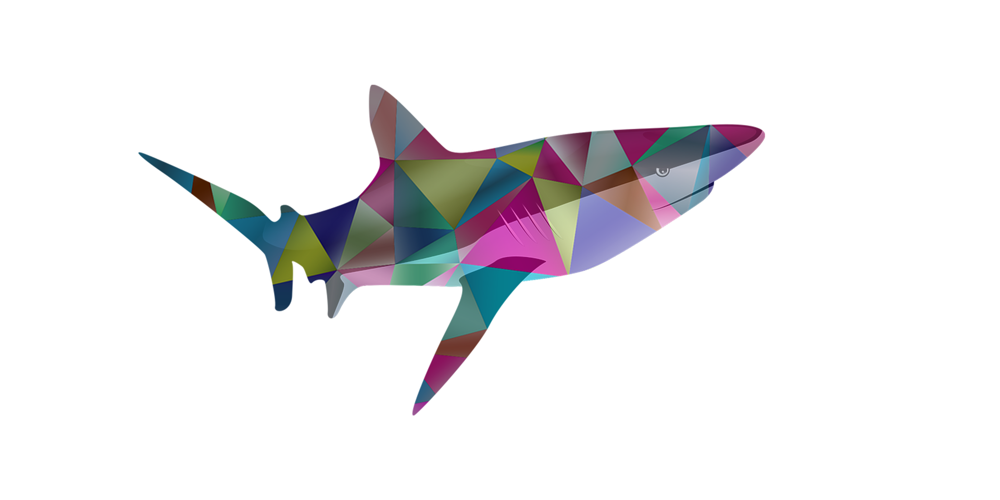

נטע הסתכלה ברשימת המצרכים ״צריך לצלול לטורנרוס כדי להשיג כסכס מראש דג הקשת הנדיר וצדפה זוהרת״ ״אוי הבנתי למה אמא אמרה שזה לא לגילנו״ אמרה נילי בבעתה ״עכשיו הולכים לאזור הכי הכי מסוכן בעולם! וצריך להיכנס פנימה לא מפתיע בהתחשב לעמק הורדים אבל זה מסוכן! מאוד!ֿ״ ״אל תדאגי״ אמרתי למרות שפחדתי מאוד ״יש לנו פיית מים במקרא הזה״ סיון חייכה ״קדימה!״ וווושששש ווווששששש הגלים היו עצומים ומערבולות היו בכל מקום סיון הביאה לנו בועות לא מתפוצצות ״תהדקו אותם לפנים שיסתירו את העיניים האף והפה״ היא הדגימה עשינו כמוה זאת היתה קצת תחושה מוזרה ״טוב״ סיון אמרה ״בואו אחרי!״ ״אין סיכוי!״ אמרה אדווה ונילי נראתה כאילו עומדת להתעלף כי סיון נכנסה למערבולת עצומה ״קדימה״ צעקה נגה לקול הרוח צללנו המקום היה יפייפה במערבולת היו דולפינים אצות ודגים ראיתי כמה צדפות ולקחתי אותם ואחרי כמה דקות נחתנו ליד סיון ״זה יפייפה״ אמרו ליבי נילי ואדווה ״לא ידעתי שהים הסוער יפייפה״ אמרו נגה ונטע ואני שתקתי מרוב הלם סיון חייכה שוב את חיוכה המסתורי והמשיכה ללכת תוך כדי ראינו יצורים מדהימים מגניב איך היה שקט כאן ומעל המים כל כך סוער ופתאום ראיתי דג במלא מגוון צבעים שוחה במהירות ונעלם ״ראיתי את גד הקשת!״ אמרתי ״קדימה אחריו״ אמרה נילי שהרגישה כאן בתוחה כל הבנות רצו אל הדג חוץ ממני ומסיון ״לא״ אמרה סיון ״אתם מפחידות אותו!״ ״הצד החיובי״ אמרתי ״זה שיש לי צדפות נוצצות״ עיניה של סיון הבריקו ״זהו זה! דגי הקשת אוהבים צדפות נוצצות״ ״דג הקשת״ קראתי שדג הקשת הגעה דג הקשת מיד שינה את מסלולו אלי והזיז בהתלהבות את זנבו ממש כמו כלבלב חמוד ״בוא, בוא קח!״ הדג לקח את הצדפה הנוצצת ותוך כדי תלשתי בזהירות כסכס מבריק הדג נע קצת אבל לא ברח, זה היה מתוק! כשיצאנו מהמים ליבשה נטע אמרה ״נשאר עוד 2 מרכיבים אחרונים!״ 